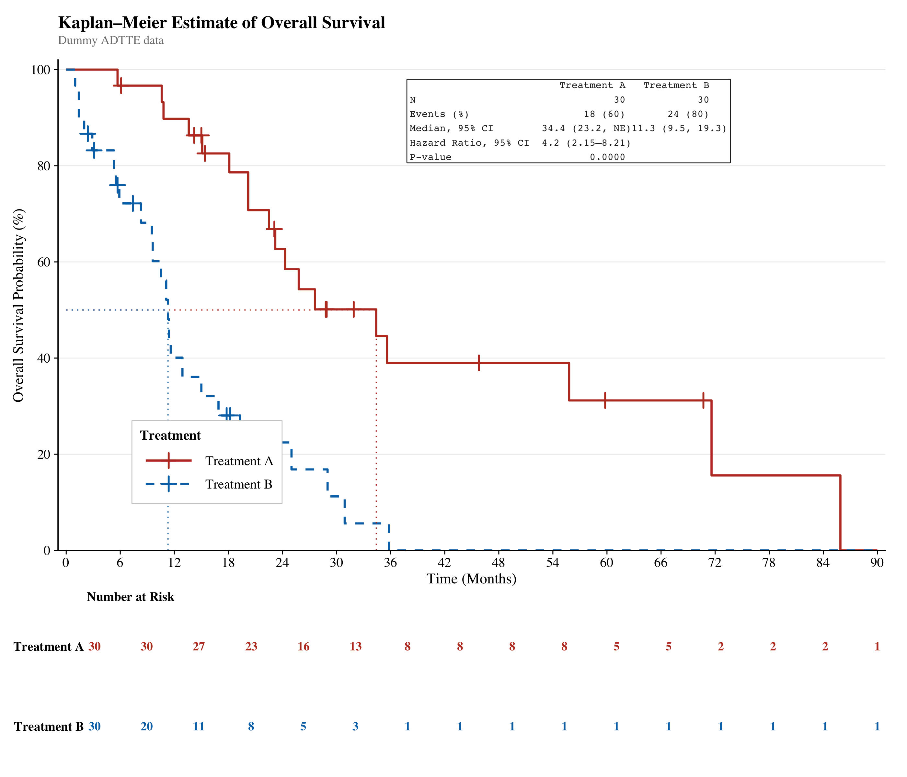
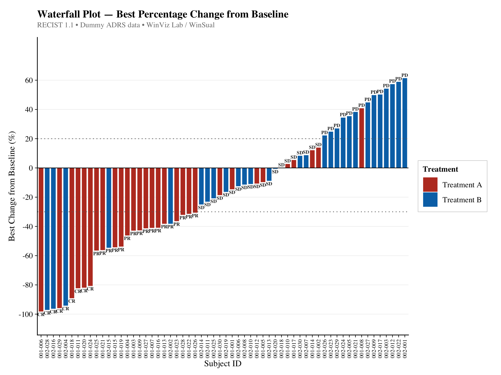
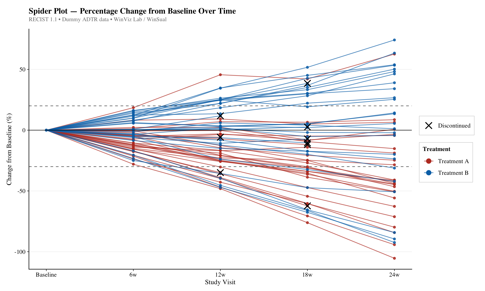
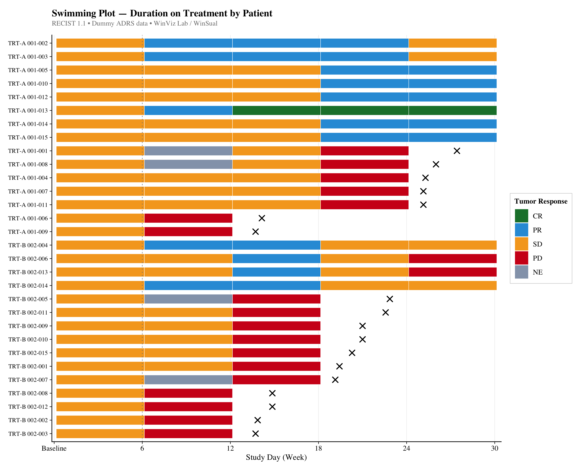
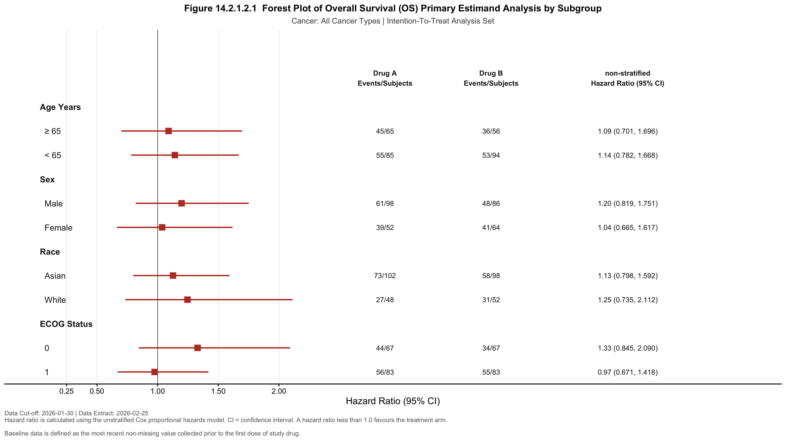
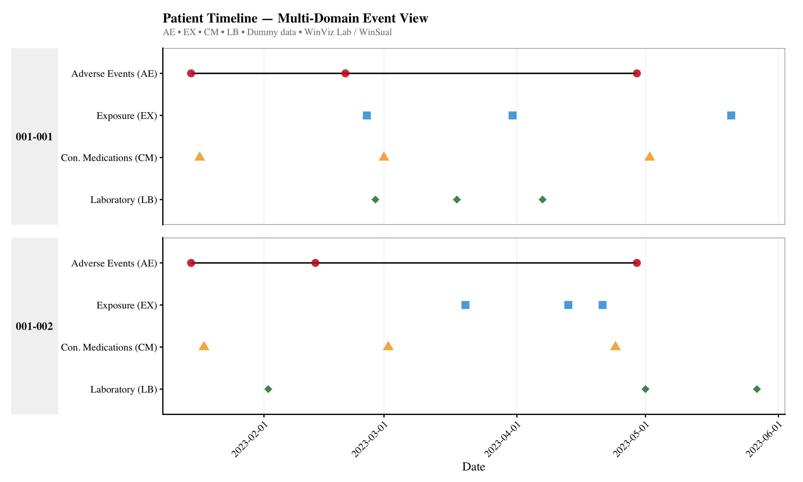

Production-ready data visualizations built with open-source tools.
Template code included — free to use.
"The contributions I long to make."

Kaplan–Meier survival curves with risk table, median lines, HR annotation table, and RTF output. Built on ADTTE structure.

Best overall response visualization ordered by magnitude of change. BOR label on each bar. Colour by treatment arm. Built on ADRS structure.

Individual patient tumor response over time. Longitudinal oncology visualization with discontinued markers. Built on ADTR structure.

Duration on treatment by patient with colour-coded tumor response intervals. Supports discontinued markers and optional event annotations. Built on ADRS structure.

Subgroup hazard ratio analysis with 95% CI. YAML-driven workflow: change one parameter to regenerate the full Quarto report. PNG + RTF output. Built on ADSL structure.

Multi-domain patient event timeline — standardizes AE, EX, CM, and LB onto one shared time axis, faceted by subject. Interactive tooltips via plotly.
Reorganizing raw records into analysis-ready shape — sorting, merging, long/wide reshaping, expanding multi-select fields, and linking cross-domain records. SAS logic and its tidyverse equivalent shown side by side.
Centralizing variable labels and controlling output column order for consistent, submission-ready datasets.
Parsing and deriving date/time values — ISO 8601 conversion, partial dates, relative study day, and datetime differences for PK timing.
The core set of ADaM-style derivations — treatment-emergent flags, baseline/change from baseline, PARAM/PARAMCD, toxicity grading, population flags, and more.
Cleaning and transforming raw text and numeric values — string split/concatenate, numeric ↔ character conversion, coalescing multiple sources, and regex extraction.
Checking data integrity and exporting deliverables — structural validation checks and export across multiple datasets in one call.
Oncology-specific derivations — RECIST lesion classification, best overall response, and PFS/OS time-to-event with censoring.